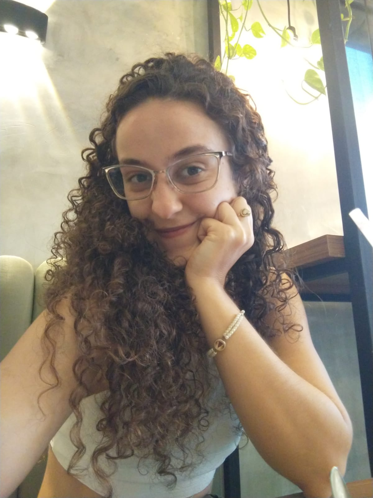

✦
Clareza
Saber exatamente o que você estuda hoje, e por quê. Sem achismo e sem culpa.

A CLAREIA nasceu de três anos acompanhando alunos de pré-vestibular e vendo, de perto, o mesmo padrão: gente estudando muito e se sentindo perdida. Eu também passei por essa fase — sei o que é olhar para um cronograma impossível e achar que o problema é você.
Aqui a gente trabalha com uma ideia simples: leveza é diferente de moleza. Estudar de forma sustentável não é estudar menos; é estudar com direção, sabendo por quê você está fazendo cada coisa e conseguindo manter isso até o dia da prova.
É um acompanhamento individual e online para estudantes do ENEM e ensino médio que querem organizar seus estudos sem se perder no processo — nem emocionalmente, nem na rotina.
E, principalmente: o suporte aqui não é só técnico. Ansiedade, culpa e desânimo fazem parte do caminho, e você não vai atravessar isso sozinho.
Saber exatamente o que você estuda hoje, e por quê. Sem achismo e sem culpa.
Uma rotina que cabe na sua vida. Leveza é diferente de moleza.
Pequenos passos repetidos valem mais que maratonas que não se sustentam.
Dois formatos, o mesmo cuidado. A gente conversa e escolhe junto.
Uma agenda de estudos feita para a sua rotina, com prioridades definidas, ciclo de revisões e orientações de uso.
O cronograma mais acompanhamento contínuo, em encontros semanais ou quinzenais, para ajustar a rota junto com você.
Um questionário para entender sua rotina, sua meta e seus desafios.
Reunião online para montarmos juntos o plano de estudos.
Suporte pelo WhatsApp para ajustar o que não está funcionando.
Olhamos o que avançou e recalibramos as prioridades do mês.
A primeira conversa é só isso: uma conversa. Sem compromisso, sem julgar.